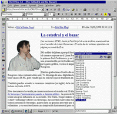
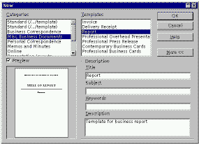
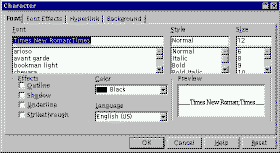
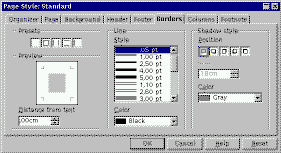
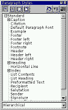
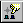
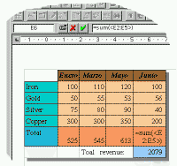
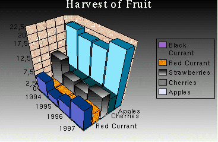
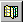
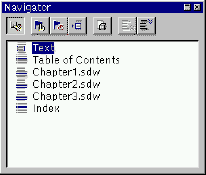

![[Photo of the Author]](../../common/images/Ismael-R.gif)
Ismael Ripoll Sobre el Autor: Doctorado por la Universidad Politécnica de Valencia en 1996. Profesor en Sistemas Operativos en el Departamento DISCA. Áreas de investigación de interés incluyen tareas en tiempo-real y sistema operativos. Usuario de Linux desde 1994. Hobbies: Treking en los Pirineos, esquiar y electrónica casera. Escribe al autor Índice de contenidos: Nuevas actualizaciones El procesador de textos Comienza el trabajo Editando texto Edición básica Edición intermedia Edición Avanzada Conclusiones |
StarOffice EditorAbstract: Éste es el segundo artículo dedicado a la suite ofimática StarOffice. El primer artículo, tras dar una rápida visión global de toda la suite, se centraba en la creación de presentaciones. En esta segunda entrega estudiaremos la herramienta estrella de todo paquete de oficina: el editor de texto Nuevas actualizacionesDesde que escribí el anterior artículo sólo han pasado dos meses. Desde entonces, StarDivision ha hecho públicas tres revisiones (service packs) de StarOffice (http://www.stardivision.com). Más que parches de la distribución, lo que entregan son una nueva instalación completa. La estabilidad del programa se ha mejorado mucho, y ya funcionan correctamente todas las funciones. Reconoce perfectamente los símbolos especiales del teclado castellano y catalán (acentos y diéreis), supongo que también funcionará con otros teclados de otros idiomas. Junto con la distribución viene un completísimo manual de instalación (en html y pdf), donde se da respuesta a todos los problemas que pueden surgir. En el anterior número dí un dato incorrecto. Comenté que el diseño de StarOffice se había hecho pensando en la portabilidad, y que solo el 20% del código era dependiente del sistema operativo. Lo cual era cierto en la versión 3.1, pero en la versión actual (la 4.0) solo el 0.5% es dependiente de la implementación. Corrección apuntada por Michael, de StarDivision. El procesador de textosComo ya comenté en el número anterior, los diseñadores de StarOffice no han querido reintentar la rueda en lo que se refiere al interfaz de usuario, por lo que han adoptado la mayor parte del look-and-feel del MsWord. Es tan compatible con Word que puede importar y exportar documentos en formato Word 6.0/95 y RTF (Rich, Text, Format). No pretendo hacer una descripción a modo de tutorial sobre este procesador de textos, sino más bien una descripción de las capacidades con que cuenta este programa. Hay cientos de libros, y no estoy exagerando, en los que se explica con desmedido detalle cómo utilizar procesadores de texto. Este artículo lo estoy escribiendo con el propio editor de texto de StarOffice. Veamos ahora cómo es el entorno de trabajo. La ventana de trabajo está compuesta por lo siguientes elementos:
Éstas son las barras de herramientas tal como aparecen tras la instalación, pero podemos configurarlas a nuestro gusto añadiendo o eliminando botones a cada barra o incluso creando nuevas barras. La localización espacial de las barras es totalmente configurable con sólo arrastrarlas al lugar del escritorio que deseemos (excepto la barra de menús y la barra de control que han de estar en la parte superior e inferior respectivamente). Para referirse a los documento se utilizan direcciones URL, tanto si es un documento local como remoto. Comienza el trabajoPara empezar a escribir primero tenemos que crear el documento. Ésto lo podemos hacer al menos de 4 formas distintas: 
Editando textoHe dividido en tres partes las funcionalidades que ofrece StarOffice. Dependiendo del conocimiento que tengas de los procesadores de texto y de lo que necesites de ellos, puedes saltarte algunas de las siguientes secciones. Edición básicaTiene todas las funcionalidades básicas para trabajar sobre el formato de letra. En la barra de herramientas de objetos tenemos botones rápidos para acceder a los atributos más utilizados:
 Tipo de letra, tamaño, negrita, itálica y subrayado. A estos y a otros atributos se pueden acceder y modificar desde el menú de contexto. Desde la barra de menú (Format->Character) se puede abrir una ventana de diálogo desde la que se tiene acceso a todos los atributos. En lo relativo al formato del párrafo tampoco se echa nada en falta. En la barra de objetos, junto a los botones de negrita etc. tenemos botones para alinear, seleccionar enumeraciones o itemizes e indentar párrafos. También podemos modificar los atributos de los párrafos desde el menú de contexto y la barra de menús. La gestión de los puntos de tabulación es completamente idéntico a como se hace en Word: utilizando la regla horizontal.  Que levanten la mano los que hayan tenido problemas con el MsWord a la hora de configurar el formato de página. Extrañamente en MsWord el formato de página está distribuido por varias ventanas de diálogo, a las que se accede desde varios puntos en la jerarquía de menús. Por suerte, en StarOffice todas las características de la página se pueden modificar desde una única ventana de diálogo: Format->Page. Algunas de las operaciones más habituales las podemos encontrar también en la barra de herramientas principal. Desde aquí se define tipo de página (Letter, A3, A4, etc.), el tamaño del encabezado y pie de página, el estilo de los bordes, el color del fondo, así como el número y estilo de las columnas (en caso de querer distribuir el texto en varias columnas). Las opciones para imprimir en papel son bastante escasas, sólo permite imprimir sobre impresoras PostScript. De todas formas, si tenemos bien configurado el sistema con el filtro correspondiente (normalmente será el gs) en el fichero /etc/printcap, podremos imprimir sin más problemas. Edición intermediaUna de las primeras características que incorporaron los procesadores de texto fueron los juegos de estilos. Los estilos son conjuntos de atributos --de letra, de párrafo o ambos-- agrupados bajo un nombre. Por ejemplo podemos definir el estilo "título" como letra helvética, 14pt, negrita e itálica. Cada vez que tengamos que crear un nuevo título sólo tendremos que asignarle el estilo "título". Las ventajas son evidentes:
StarOffice ofrece toda una serie de estilos predefinidos que podemos utilizar en caso de no querer crear unos propios. Es interesante disponer de muchos estilos para poder escoger el más conveniente al tipo de documento que estamos escribiendo, pero por contra, no es deseable tener que "buscar" el estilo que hemos elegido entre la larga lista de estilos disponibles. La forma en la que StarOffice presenta los estilos es muy acertada. Los estilos que se han aplicado al documento aparecen en una lista desplegable de la barra de objetos, por lo que en principio, sólo es necesario buscarlos una vez en la lista global de estilos. Por otra parte, la lista global de estilos (que podemos activar pulsando el botón ) permite organizarla de varias formas: automática (en función de la plantilla en la que se basa el documento StarOffice selecciona los estilos más apropiados); todos los estilos; estilos aplicados; estilos HTML; creados por el usuario; o en forma de árbol jerárquico. A la par que se puede seleccionar el conjunto de estilos que queremos tener disponibles, los estilos están también organizados en función del principal atributo que definen: estilo de párrafos, de carácter, de página o de marco. Si bien los más útiles con los estilos de párrafo. Disponemos de un buen diccionario de sinónimos. Por ahora sólo está disponible la versión en Inglés y alemán. Las tablas son otra apreciada característica de todo buen procesador de textos. Una curiosidad que me ha llamado la atención de MsWord es que no puede unir celdas verticalmente. Aquí no tenemos ese problema.  Otra cosa que también había echado en falta en MsWord es la poca potencia de cálculo que ofrecen sus tablas, en otras palabras, una tabla de Word está muy lejos de poderse utilizar como hoja de cálculo --entre otras, se me ocurre que de esta forma se "motiva" a que el usuario se compre una de hoja de cálculo--. Las tablas del editor de textos (que no tienen nada que ver con las hojas de cálculo de este mismo paquete) son autenticas hojas de cálculo, la barra de objetos se transforma en un completo interfaz para introducir fórmulas en las celdas. Para construir las formulas con podemos ayudar del ratón para marcar conjuntos de celdas. Los marcos (frames) permiten situar texto y otros objetos dentro de una página con absoluta libertad. Dentro de un marco podemos insertar los objetos que queramos (tabla, imagen, texto, etc.). El marco se comporta como un contenedor de objetos, si movemos el marco, todos los objetos que contenga se moverán con él. La distribución de los objetos dentro del marco sigue las mismas leyes que en una página normal. Disponemos de dos formas para distribuir el texto en varias columnas: (1) aplicar la distribución de columnas a todo el documento; (2) crear una estructura de columnas dentro de un marco flotante. Con este segundo esquema nos evitamos el incomodo método que se tiene que utilizar en Word para tener documentos compuestos de por páginas con distinto número de columnas. Edición AvanzadaUna vez se ha escrito todo un documento, se puede reorganizar los párrafos rápidamente manteniendo la tecla <Ctrl> pulsada y moviéndolo con las teclas del cursor (igual que con <Shift>-<Alt> en MsWord). Se pueden crear expresiones matemáticas bien ayudado por un menú de opciones, o escribiéndolas de forma muy parecida a como se escribirían en LaTeX. Esta expresión: sum from {i le t le n} { 1 over {x_i + y_i } b_{ij} } = {prod from {k %notequal i} x_k - x_k } over {prod from {k %notequal j} x_k - x_k } da como resultado la siguiente formula: Una posibilidad un tanto curiosa es la de insertar texto animado. Este texto se desplaza horizontalmente con un movimiento uniforme, apareciendo por la derecha, y cuando ha pasado todo el texto se vuelve a repetir desde el principio. Con este tipo de objetos el documento se convierte en algo vivo divertido. Podemos insertar una gran variedad de controles (botones, casillas para marcar, campos de texto, etc) similares a los utilizados en los formularios HTML. Una vez insertados se comportan como objetos activos sobre los que se puede actuar. Podemos asociar una macro (escrita en StarBasic o en JavaScript) con alguna acción del objeto. Es algo así como crear formularios o una especie de programación visual.  A partir de una tabla con datos numéricos, podemos generar una gráfico de barras. No entraré a describir todas las opciones que StarOffice pone a nuestra disposición para crear y modelar el gráfico de barras, pues quiero que acabar este artículo antes de que aparezca la siguiente versión. Sólo comentar que los gráficos de barras son objetos OLE y al igual que sucede en Windows, todos los menús del programa se convierten en los menús de la aplicación empotrada. Aparte del gráfico de barras, que es un objeto OLE, también podemos insertar otros objetos: una hoja de cálculo, una presentación o una imagen. Sólo los muy experimentados en Word se atreven a utilizar
con soltura los estilos. En StarOffice la situación es
completamente distinta, el concepto de estilo está
perfectamente integrado con el de edición. Para crear un
estilo tan sólo hay que marcar el objeto que queremos utilizar
como modelo ( por ejemplo un párrafo) y pulsar el botón
de creación de estilo (localizado en la ventana de estilos El navegador () es una ventana en la que aparecen listados todos los objetos que contiene el documento, agrupados por clases: Cabeceras, tablas, marcos, figuras, objetos OLE, marcas, secciones, referencias bibliográficas, enlaces, índices y notas. Desde esta ventana podemos "navegar" por el texto, llevando el cursor a cualquiera de estos objetos. La combinación del explorador () y el "beamer" () nos permite explorar todos los archivos del disco, incluida la galería de gráficos que incorpora StarOffice, e insertarlos en nuestro documento con sólo arrastrarlos desde la ventana del "beamer". A las carpetas que inicialmente aparecen en el explotador, se le pueden añadir (utilizando el menú contextual) todos las carpetas que contengan ficheros que vayamos a necesitar. Si hemos olvidado el nombre del fichero, el explorador también incorpora una utilidad de búsqueda.  Ya no tienes que preocuparte por trabajar con documentos grandes. Cada capítulo se escribe en un documento independiente y luego se juntan todos los documentos en un documento maestro. El documento maestro es un tipo especial de documento compuesto de enlaces a los documentos que contienen los distintos capítulos. Es en el documento maestro donde se definen los atributos de la página (encabezados, pies de página, ancho y alto de página, etc.), perdiéndose cualquier atributo de página que tuvieran los documentos independientes. Sobre el documento maestro se crean los índices y tablas de contenidos. Como ya es costumbre en StarOffice, se dispone de una ventan con todas las herramientas necesarias para poder "navegar" fácilmente por todos los documentos que componen el documento maestro. En todo momento tenemos una visión completa del documento final. La forma de trabajo es la siguiente: se crea un documento maestro nuevo, se arrastra cada uno de los documentos que contienen los capítulos desde el "beamer" al "navegador" luego se insertan los índices, se ajustan las cabeceras y números de página al gusto y listo para imprimir. Si en el último momento queremos cambiar alguna cosa sólo hay que hacer doble click en el navegador sobre el documento que queramos modificar y lo editamos sobre otra ventana distinta. Para poder unir correctamente todos los documentos (por ejemplo si queremos añadir una página en blanco entre dos capítulos) podemos añadir texto en el documento maestro. ConclusionesCon el service pack 3 se ha alcanzado un nivel de prestaciones y robustez que está a la altura del usuario de Linux más exigente (usuarios que considerán el botón de reset como algo inútil). En lo relativo a los requisitos hardware necesarios para poder ejecutar StarOffice, no es un programa especialmente pequeño, como podemos ver: ps -m | grep soffice PID TTY ... TRS DRS SIZE SWAP RSS SHRD LIB DT COMMAND ... 302 1 ... 3248 32812 50064 14004 36060 18096 0 4460 soffice.bin el "programita" está consumiendo 50Mb. Se está ejecutando sobre una máquina con 64Mb. En cuanto a la velocidad de ejecución, suponiendo que se dispone de suficiente memoria, es muy rápida. Tanto las operaciones de edición básica, como las operaciones más complejas (trabajar con tablas, objetos, OLE, o moverse por documentos grandes) se pueden realizar sin ningún tipo de retardo apreciable. Donde sí que obtiene un buen rendimiento es en velocidad de impresión, puede imprimir en cuestión de segundos documentos de más de 100 páginas. Quedan por presentar muchas otras funcionalidades del procesador de textos de StarOffice, pero creo el lector se puede hacer una idea bastante exacta de qué es lo que puede esperar de esta suite. El procesador de textos de StarOffice cubre perfectamente las necesidades de edición de cualquier usuario, e incluso ofrece algunas características DTP (DeskTop Publishing). Gracias a la capacidad de importar y exportar archivos en varios formatos (RTF, HTML, Word6.0/95) se puede realizar una migración a esta suite sin tener que perder documentos antiguos. En las cuestiones relativas al manejo del programa, aspecto del interfaz y funcionalidades que implemanta es comparable a lo que ofrece el conocido MsWord97; por otra parte (y por suerte) en lo relativo a robustez y fiabilidad sale gandando StarOffice. Enlaces de interes:Las marcas son propiedad de sus respectivos propietarios Texto original en Castellano |
|
Páginas web mantenidas por Miguel Ángel Sepúlveda © Ismael Ripoll 1998 LinuxFocus 1998 |
{kind=link}